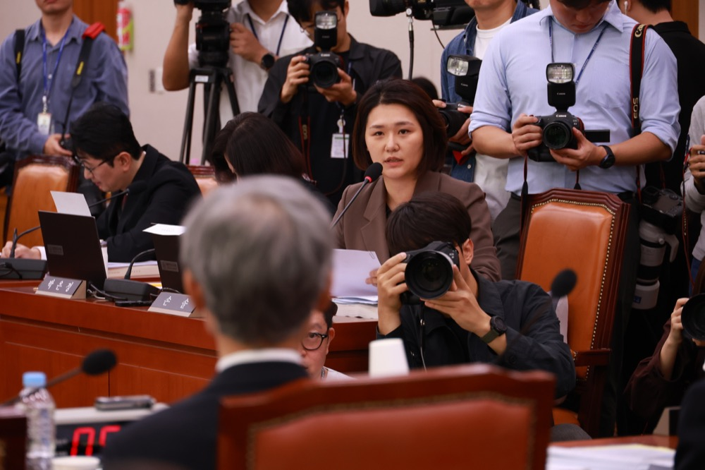
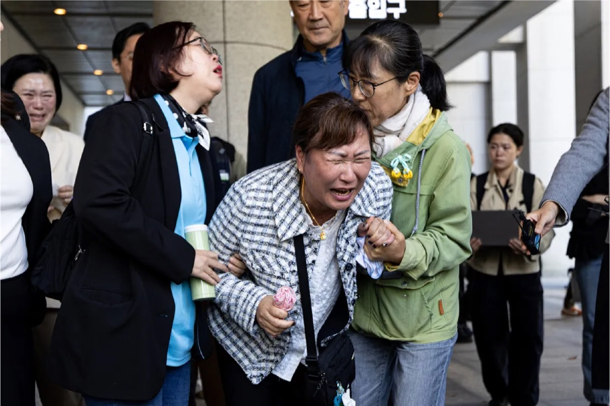
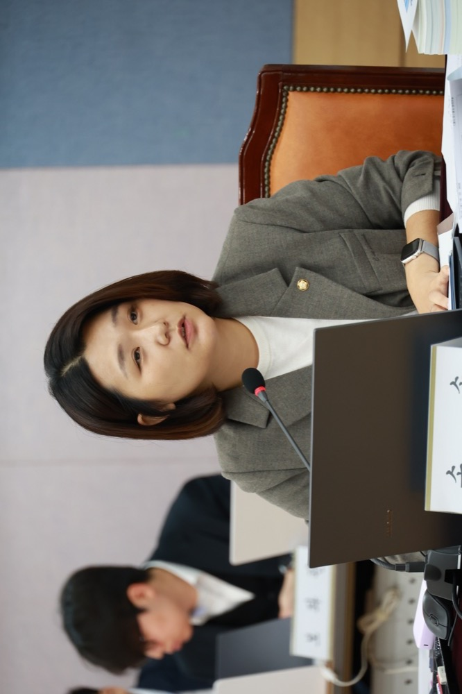
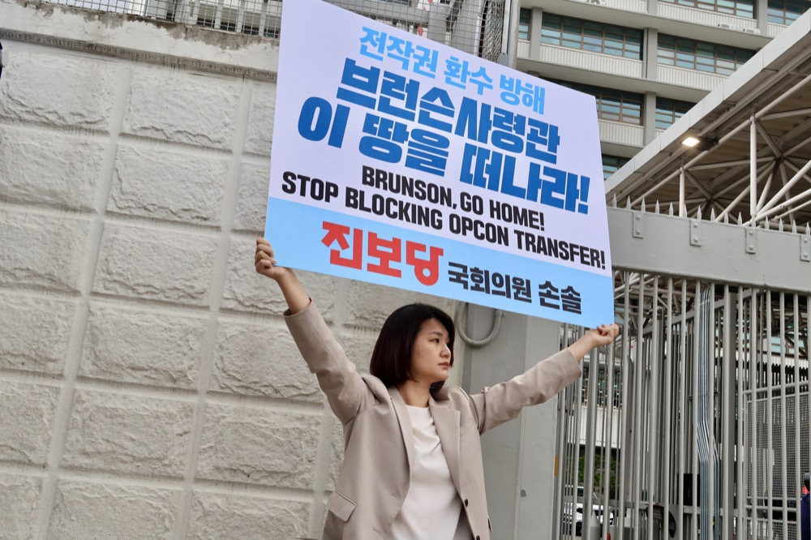
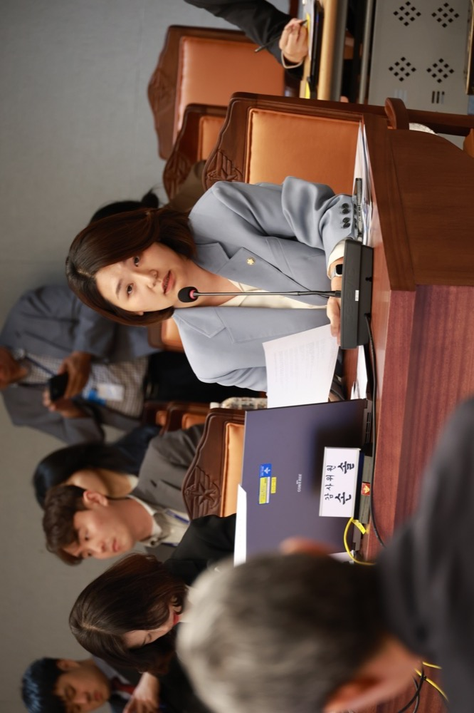

‘혹시 제2의 윤석열을
꿈꾸는 겁니까?’
대법관 장기공석 사태,
대통령과의 갈등을 과시하는
조희대 대법관에게
법복 입고 정치하느냐 물었습니다.

국회의원 손솔 의정보고서
2026년 10월호
대법관 장기공석 사태,
대통령과의 갈등을 과시하는
조희대 대법관에게
법복 입고 정치하느냐 물었습니다.

아리셀 참사 책임자
징역 4년 확정,


전시작전권 전환이 애초 계획대로는 어렵다며
대한민국의 군사주권을 함부로 언급하는
주한미군사령관.


궁금한 키워드를 클릭하면 관련 링크로 연결됩니다
10월에도 동탄 곳곳에서 주민 여러분을 만났습니다.
생활 속 불편부터 동탄의 내일까지,
현장에서 들은 이야기를
의정활동에 담겠습니다.
김종배의 시선집중
매불쇼
무등의 아침
스픽스
손솔의 든든한 편이 되어주세요.
열정적인 의정활동으로 보답하겠습니다.